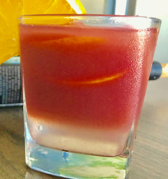

                                    <figure class="recipePage">                                        
                                        <figcaption class="caption">
                                        
                                            <!--  Copy your recipie in here -->
                                            <h1><span style="color: #ff0000;">Red Sangria</span></h1>
                                            <p>&nbsp;<strong>Ingredients</strong></p>
                                            <ul>
                                            <li>Red wine 1 bottle</li>
                                            <li>Unsweetened club soda 2 cups</li>
                                            <li>Orange juice 1 cup</li>
                                            <li>Lemon 1 sliced</li>
                                            <li>Apple 1/2 sliced</li>
                                            <li>Orange 1/2 sliced</li>
                                            <li>Strawberry 1 cup&nbsp;sliced</li>
                                            <li>Brown sugar 2 tbsp (optional)&nbsp;</li>
                                            </ul>
                                            <p><strong>Method</strong></p>
                                            <p>In a glass pitcher combine the sliced fruits and muddle them. Add wine, orange juice and sugar and stir. Refrigerate for 24 hours for the fruits to blend into the drink.</p>
                                            <p>To serve, fill glass with ice, add club soda, add the wine fruit mixture. Spoon couple of fruit slices into the glass. Place sliced orange wedge on the glass rim. Enjoy!</p>
                                            <p>&nbsp;</p>
                                            <p><strong>Notes</strong>:</p>
                                            <p>Any cheap wine can be used.</p>
                                            <p>Do not peel the fruits.</p>
                                            <p>Peaches and blueberries can also be added or substituted for the ones listed above.</p>
                                            <p>An ounce of brandy or rum can be added for additional booze.</p>
                                            <!-- Copy Up to here-->

                                        </figcaption>
                                       
                                    </figure>
                                  